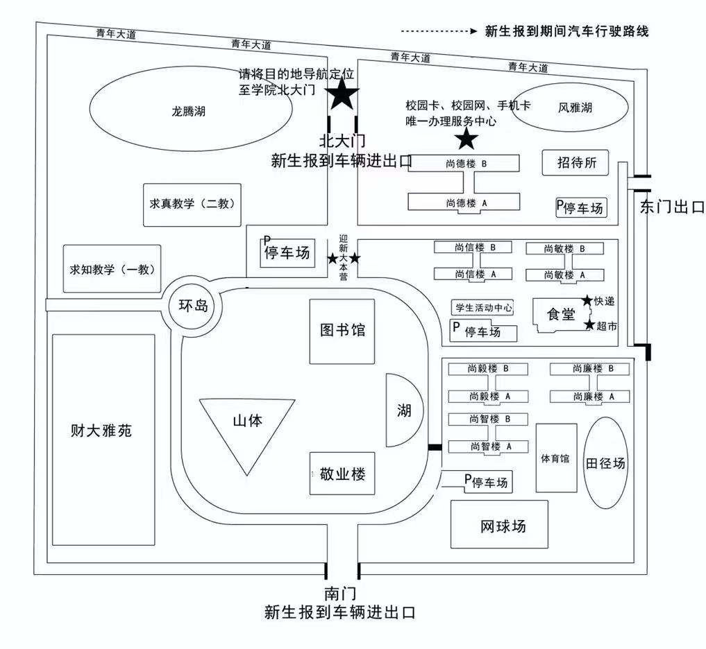

图书馆
至善图书馆
从南门入口沿主路一直往前走，就可以到达至善图书馆(路线从南门开始)。
江财新启程 · 生活更从容
把报到流程、材料准备、校园地图、生活指南和常见问题放在同一页，帮新同学少走弯路，更快熟悉江财现经管、融入校园。
新学期，一起出发！
校园地图

从南门入口沿主路一直往前走，就可以到达至善图书馆(路线从南门开始)。
常用于社团活动、班级活动、讲座和晚会等。去之前先看通知里的具体场地名称，避免走到楼里再找(路线从南门开始)。
上课前先看课程表里的教室编号，确认教学楼和楼层。第一次上课建议提前 10 到 15 分钟出发(路线从图书馆开始)。
宿舍分为尚德、尚信、尚敏、尚廉、尚毅、尚智，每种分为 A、B 两栋。先确认楼栋名称，再按对应路线找会更清楚。
路线 1-3
路线 1-2
路线 1-2
路线 1-3
路线 1-3
路线 1-2
饭点人会比较多，可以先错峰熟悉窗口位置，再慢慢找自己喜欢的餐品(路线从大活门口篮球场开始)。
体育课、运动训练或大型活动前，先看课程群或通知确认集合点和开放时间(路线从食堂门口开始)。
食堂驿站在食堂背后(路线从食堂出发)，雅苑驿站在财大雅苑小区里面(路线从雅苑环岛出发)。取件前先看清取件码，再确认要去哪个驿站。
德生图文广告、明创图文广告在尚德宿舍背后，云印社在环岛雅苑旁(路线从南门开始)。
位置：尚德宿舍背后
位置：环岛雅苑旁
路线：从南门入口沿主路一直往前走
路线：按照片顺序一步步找
路线：按照片顺序一步步找
路线：按照片顺序一步步找
位置：食堂背后
位置：财大雅苑小区里面
路线：按照片顺序一步步找
按尚德、尚信、尚敏、尚廉、尚毅、尚智分组查看
路线 1-3
路线 1-2
路线 1-2
路线 1-3
路线 1-3
路线 1-2
入学必看
到校后按学院安排完成签到、身份核验、宿舍入住、校园卡领取等步骤。
核验高考准考证、录取通知书；安排学生宿舍；发放校园一卡通、空调遥控器。
缴费咨询、网上缴费未成功学生现场指导；办理一卡通业务绑定、建行卡激活手续。
军训用品费用每套 100 元。
生活用品费用 448 元，可选择家里自带或校内购买。
提前整理录取通知书、身份证、证件照、档案材料和缴费凭证等常用材料。
报到和后续办理手续常用，建议提前集中收纳。
先保证睡眠、收纳和基础便利，其他慢慢补。
日常洗漱、清洁和换洗类物品，可按习惯准备。
学习和生活都会用到，电脑按专业需要准备即可。
开学初先备基础文具，专业工具可等课程明确后再补。
防晒、补水、舒适鞋垫和随身小物会很实用。
只作为日常应急，身体不舒服要及时去校医院。
保管好证件和行李，不轻信陌生收费信息，报到当天优先确认宿舍和班级通知。
生活指南
把校园卡、快递、食堂和宿舍这些高频事项拆开看，先抓重点，再按需要慢慢熟悉。
先判断是否真的需要办理，别被刚开学的推销节奏带着走。
校园卡不是必备品，遇到上门推销或催你马上办理的人，先稳一稳，多问问再决定。
校园卡本质上是一张带校园网的流量卡。抢课、查期末成绩等会用到学校官网的教务系统；学校也会提供免费 VPN，按通知连接后同样可以进入教务系统。
校园卡一般比普通流量卡稍贵，想咨询可以去智慧校园中心，地点在尚德 B 宿舍楼背后。
饮水、洗衣和校园卡充值都在宿舍楼内解决，第一次用按步骤来就好。
每层楼都有饮水机和洗衣房。饮水机用校园卡付费接水，洗衣机使用 APP“胖乖生活”付费使用。
先在 APP“中国建设银行”为校园卡充值余额，再到宿舍一层充值机把余额提取到卡内，这一步也叫“领取补助”。
提取后还要把卡内的钱充到淋浴、饮水等不同板块。不同板块分开计算，晚上 8、9 点后 APP 内充值可能充不进去，可以第二天早上再试。
五味斋日常用餐小提醒。
用完餐及时把餐具放到餐具回收处，食堂每层入口都有一处，方便后续同学用餐哦。
行李太多时，可以提前把大件寄到学校。
江西省九江市共青城市江益镇青年大道 59 号江西财经大学现代经济管理学院
常见问题
优先按学院或班级通知到指定地点签到，再办理宿舍入住和校园卡等事项。
可以提前寄到学校附近快递点，到校后根据取件码领取。具体快递点信息可放入校园地图。
先查看本页校园地图的教学楼分类，再结合班级群通知中的教室编号确认位置。
检查账号、密码和网络名称是否正确；仍无法连接时，记录报错信息后联系学校网络服务点。